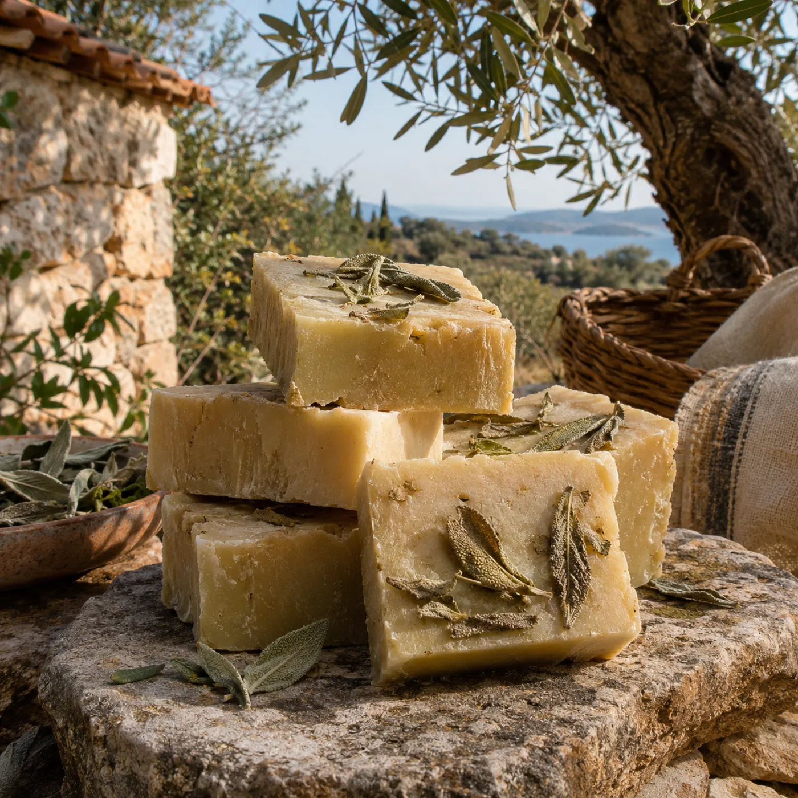
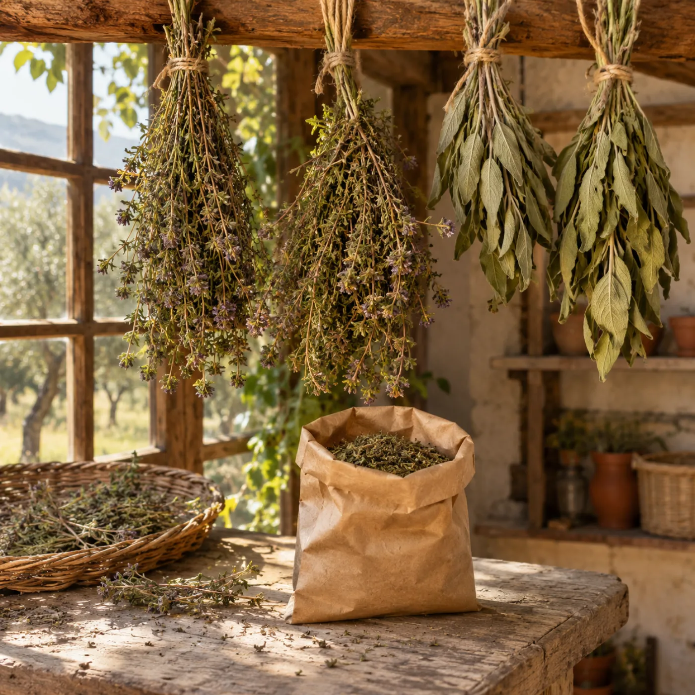
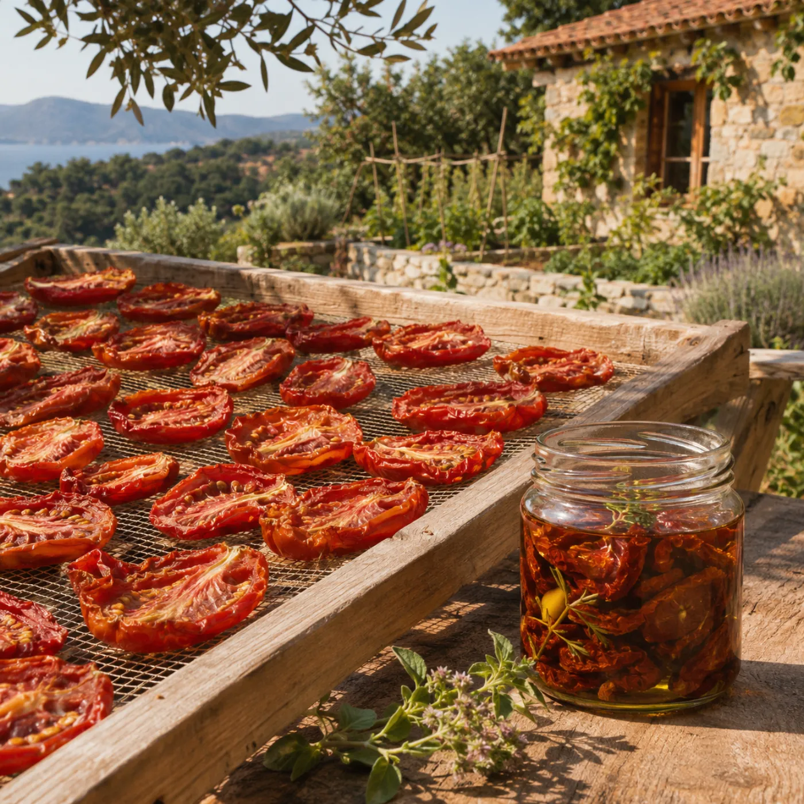
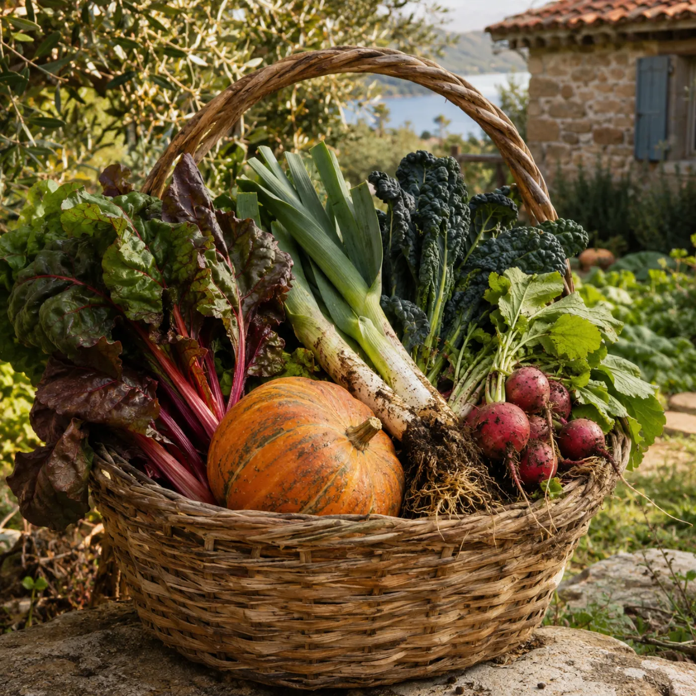

Erken hasat ve natürel sızma. Ana ürünümüz olabilir.
Artılar
- Raf ömrü uzun, 18 ay
- Yüksek değer, hediye ürünü
- Kargoyla her yere gönderilebilir
Eksiler
- Kendi ağaçlarımızdan verim 5. yıldan sonra
- Sıkım için fabrika şart
- Rekabet çok yüksek
Emek Kâr marjı Raf ömrü İzin
ilk yıllarda komşu bahçelerden alım?

Ürün TartışılıyorDoğal sabun
Kendi zeytinyağımızla, soğuk yöntemle üretilen bitki özlü sabunlar.
Artılar
- Kâr marjı yüksek
- Raf ömrü uzun
- Atölyeye dönüşebilir
Eksiler
- Kozmetik ürün bildirimi ve güvenlik raporu gerekir
- Kür süresi 6–8 hafta
Emek Kâr marjı Raf ömrü İzin

Ürün EğilimKuru otlar ve çaylar
Kekik, adaçayı, biberiye, bahçe çayı karışımları.
Artılar
- İlk yıldan ürün verir
- Hafif, kargosu kolay
- Kafeyle aynı tedarik
Eksiler
- Birim fiyat düşük
- Kurutma odası gerekir
- Gıda işletme kaydı gerekir
Emek Kâr marjı Raf ömrü İzin
ilk yıl satabileceğimiz tek şey olabilir

Ürün TartışılıyorKuru domates ve konserveler
Güneşte kurutulmuş domates, nar ekşisi, reçeller, salçalar.
Artılar
- Yaz fazlasını değerlendirir
- Kışın satılacak ürün
Eksiler
- Emek yoğun, mevsimlik
- Gıda güvenliği denetimi
- Cam kavanozlar kargoda kırılabilir
Emek Kâr marjı Raf ömrü İzin

Ürün Açık soruTaze sebze ve meyve
Mevsimine göre, bahçeden ya da sebze sepeti olarak.
Artılar
- Ziyaretçi bahçeden alır, hikâyesi güçlü
- Hızlı nakit
Eksiler
- Raf ömrü günler
- Fiyat baskısı
- Fazlası çöpe gidebilir
Emek Kâr marjı Raf ömrü İzin
Ürün TartışılıyorSebze sepeti aboneliği
Haftalık sepet, önceden ödenmiş üyelik (topluluk destekli tarım).
Artılar
- Ödemeler sezon başında alınır
- Sadık bir topluluk kurar
- Ne ekeceğimizi planlamak kolaylaşır
Eksiler
- Her hafta teslim taahhüdü
- Hasadın az olduğu yıllarda abonelere verilen sözü tutmak zorlaşabilir
Emek Kâr marjı Raf ömrü İzin
şehre yakın olursak çok güçlü
Ürün Açık soruFide ve fidan
Tohum kütüphanemizden fideler, aşılı meyve fidanları.
Artılar
- Ata tohumuna ilgi büyüyor
- Bahar aylarında yüksek talep
Eksiler
- Fidan satışı için kayıt ve sertifika gerekebilir
- Sera ve bakım ister
Emek Kâr marjı Raf ömrü İzin
Sabun yapımı, zeytin hasadı, kompost, budama, ekşi maya.
Artılar
- Kişi başı en yüksek gelir
- Ürün stoğuna bağlı değil
- Kışın da yapılabilir
Eksiler
- Program ve tanıtım emeği
- Hava şartlarına bağlı
Emek Kâr marjı Raf ömrü İzin